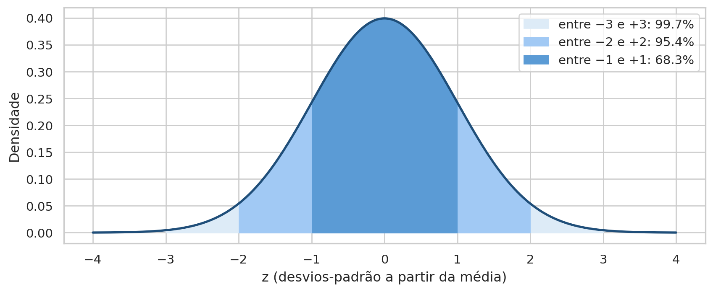
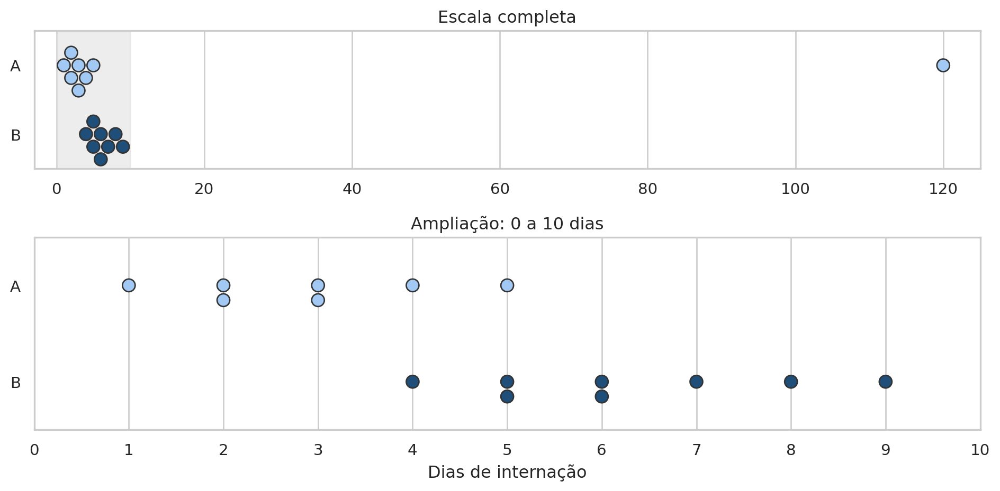
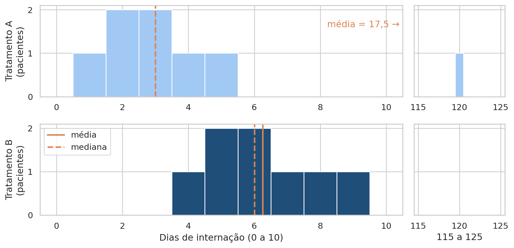
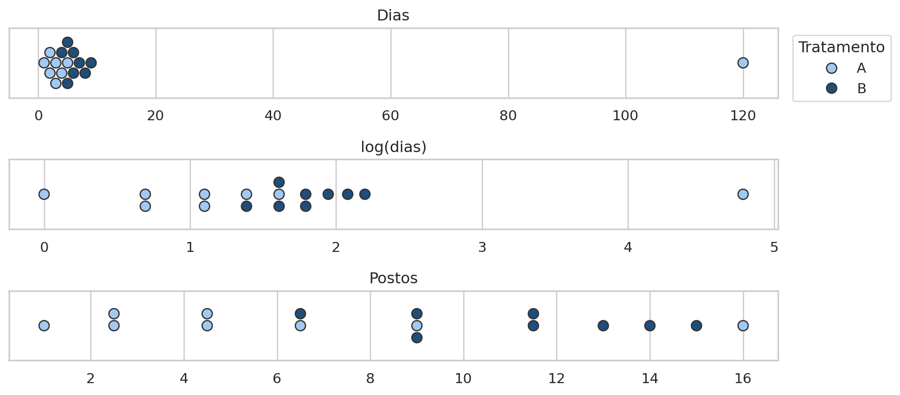
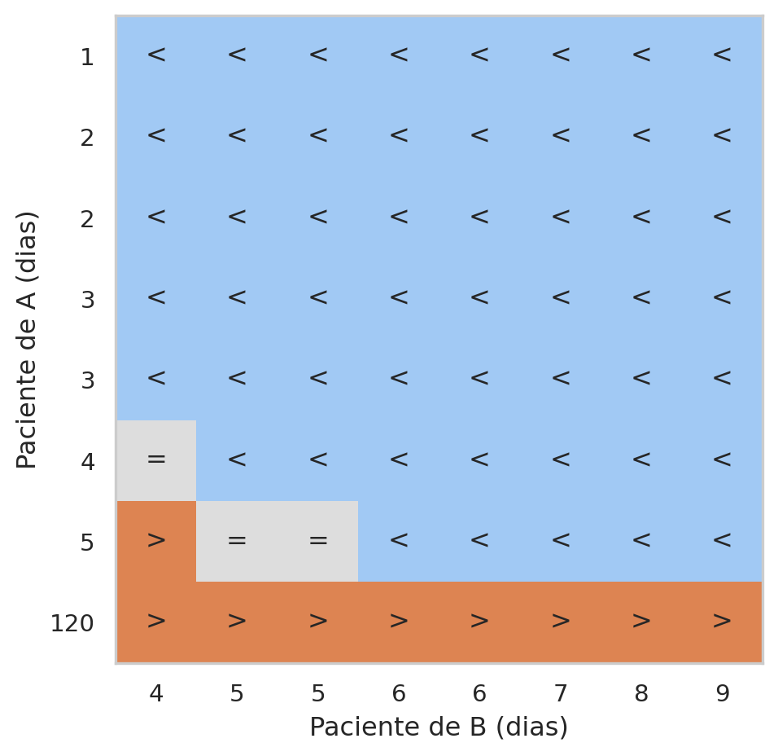
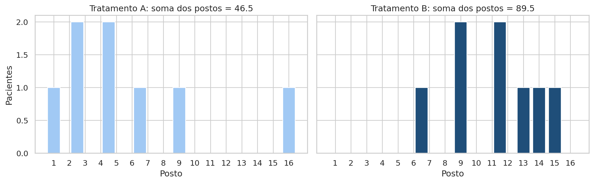
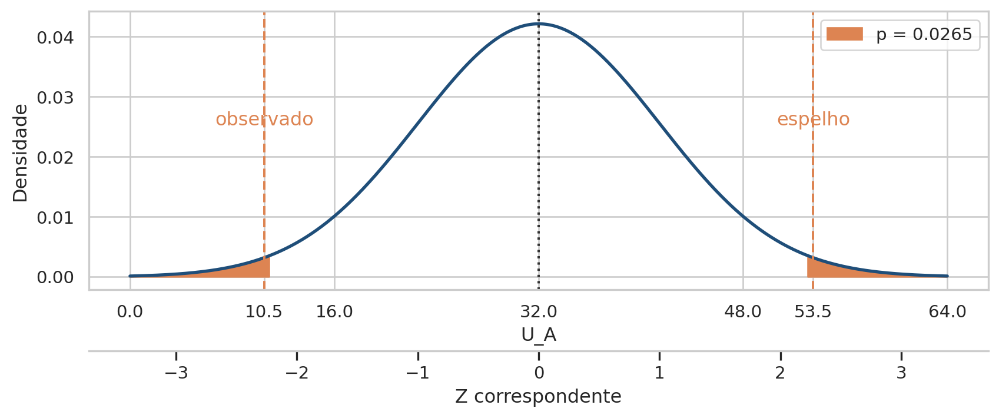
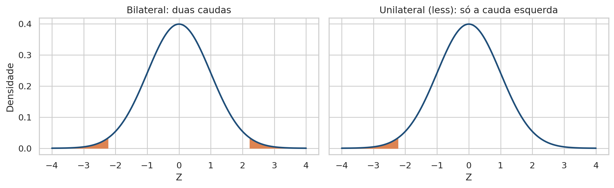
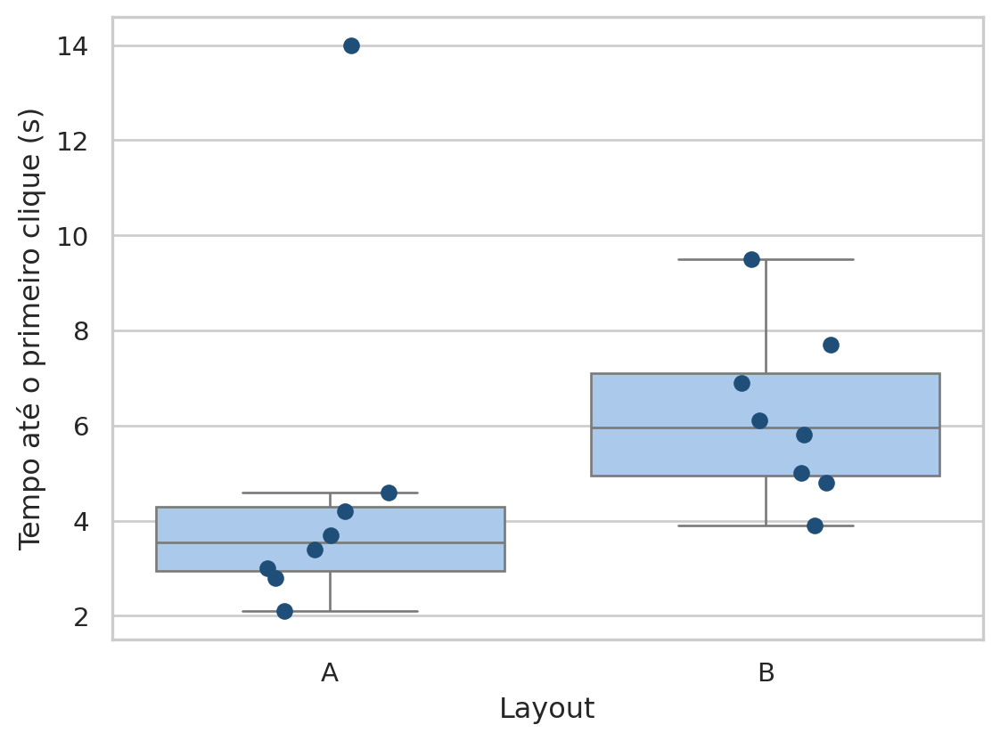
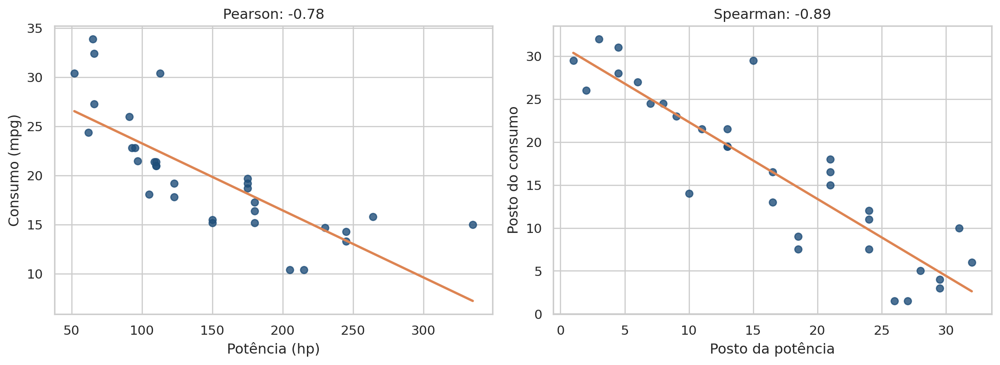

# Importa as bibliotecas e define o tema dos gráficos
import numpy as np
import pandas as pd
import matplotlib.pyplot as plt
import seaborn as sns
from matplotlib.colors import ListedColormap
from scipy import stats
sns.set_theme(style="whitegrid", palette="colorblind")Aula 9 - Testes Não Paramétricos
Motivação
Um hospital compara o tempo de internação de pacientes que receberam dois tratamentos, A e B. No grupo B, todos receberam alta entre 4 e 9 dias. No grupo A, sete pacientes saíram em até 5 dias, mas um teve uma complicação grave e ficou 120 dias internado. Um único paciente pode mudar a conclusão sobre qual tratamento é melhor?
Pense na pergunta antes de fazer qualquer conta. Se você fosse paciente desse hospital, qual tratamento escolheria? Olhando para a maioria dos pacientes, A parece melhor: quase todos saíram mais cedo. Olhando para o total de dias de leito, A parece pior, por causa de um único caso grave. As duas impressões são legítimas, e é justamente essa tensão que esta aula vai organizar.
Na Aula 8, os testes paramétricos compararam médias e supuseram que os dados seguiam distribuições conhecidas, como a normal. Com oito pacientes por grupo e um valor tão extremo, essas suposições ficam frágeis: a média de A passa a descrever mais o paciente de 120 dias do que os outros sete. Nesta aula, aprendemos uma estratégia diferente. Em vez de usar os valores, usamos a posição de cada valor na ordenação, chamada de posto. Com os postos, o paciente de 120 dias continua na análise, mas deixa de dominá-la.
O roteiro tem três partes. Primeiro, resolvemos o exemplo do hospital passo a passo com o teste de Mann-Whitney, do primeiro posto até o p-valor. Depois, aplicamos a mesma ideia a um teste A/B de layout de site. Por fim, usamos os postos para entender a diferença entre as correlações de Pearson e de Spearman.
O que muda quando comparamos posições em vez de valores?
Objetivos de aprendizagem
Ao final deste roteiro, você será capaz de:
- Construir postos a partir de dois grupos, inclusive com empates.
- Calcular as somas de postos \(W\) e a estatística \(U\) do teste de Mann-Whitney.
- Obter o p-valor do Mann-Whitney pela aproximação normal.
- Distinguir a pergunta sobre médias (Welch) da pergunta sobre ordenação (Mann-Whitney).
- Comparar as correlações de Pearson e de Spearman e explicar quando cada uma é adequada.
Como usar este roteiro
Os dados do hospital e do teste de layout são pequenos e são digitados no próprio roteiro. O caso 2 reutiliza a base mtcars, salva em mtcars/data/. Não é necessário instalar novas bibliotecas.
1. Preparando o ambiente
Começamos pelas bibliotecas e pela função report, já usada na Aula 8, que resume o resultado de um teste em uma linha. Os dados de cada exemplo são apresentados na seção em que são usados.
# Resume o resultado de um teste em uma linha legível
def report(name, result, stat="estatística"):
parts = [f"{stat} = {result.statistic:.3f}"]
if hasattr(result, "df"):
parts.append(f"gl = {result.df:.4g}")
p = result.pvalue
parts.append("p < 0.001" if p < 0.001 else f"p = {p:.3f}")
print(f"{name}: " + " · ".join(parts))2. Recapitulação: o que precisamos lembrar
2.1 As peças do teste
O teste de Mann-Whitney parece novo, mas é construído com peças que você já conhece. Vale relembrá-las antes do cálculo, porque cada uma vai reaparecer em algum passo da seção 3.
Hipóteses e p-valor. Todo teste confronta uma hipótese nula \(H_0\), que diz que não há efeito, com uma alternativa \(H_1\), que diz que há. O p-valor responde a uma pergunta condicional: se \(H_0\) fosse verdadeira, qual seria a probabilidade de obter um resultado tão ou mais extremo que o observado? Um p-valor pequeno significa que o resultado seria raro em um mundo sem efeito. Neste roteiro, todos os testes são bilaterais: uma diferença em qualquer sentido conta como evidência contra \(H_0\) (Aula 7).
Duas formas de obter o p-valor. Na Aula 7, obtivemos o p-valor de um teste de permutação simulando muitos cenários sem efeito. O Mann-Whitney também poderia ser resolvido assim, e com amostras pequenas daria o chamado p-valor exato. Nesta aula, porém, não seguiremos esse caminho. Usaremos a aproximação pela curva normal, que exige apenas duas fórmulas e funciona para amostras de qualquer tamanho.
Estatística de teste como sinal ÷ ruído. Na Aula 8, todo teste dividiu um efeito observado, o sinal, pela variação que o acaso produziria, o ruído. O resultado mede quantas “unidades de acaso” o efeito ocupa. Quando essa razão segue a curva normal padrão, o p-valor é simplesmente a área nas duas caudas da curva, além do valor observado. É assim que obteremos o p-valor do Mann-Whitney na seção 3.9. Como essa curva é central para a aula, a seção 2.2 faz uma revisão mais detalhada dela.
Média e mediana diante de extremos. Na Aula 5, vimos que a média é puxada por valores extremos, enquanto a mediana depende só de quem está no meio da ordenação. Um bilionário que entra em uma sala muda a renda média, mas quase não muda a mediana. Os postos levam essa mesma robustez da estatística descritiva para um teste de hipóteses.
2.2 Revisão estendida: a distribuição Z
A distribuição normal padrão, também chamada de distribuição Z, já apareceu várias vezes no curso: no z-score do StandardScaler da Aula 6, na regra dos “2 erros-padrão” da Aula 7 e no teste Z de proporções da Aula 8. Nesta aula, ela é a peça que transforma a estatística \(U\) em um p-valor. Vale, então, olhar para ela com calma.
Padronizar: a quantos desvios-padrão da média? Imagine que a altura dos adultos de uma cidade tenha média de 170 cm e desvio-padrão de 10 cm. Uma pessoa com 190 cm é alta, mas quão alta? A pergunta fica mais fácil de responder se medirmos a distância em desvios-padrão:
\[ z = \frac{x - \mu}{\sigma} \]
Para 190 cm, \(z = (190 - 170)/10 = +2\): a pessoa está dois desvios-padrão acima da média. Para 155 cm, \(z = (155 - 170)/10 = -1{,}5\): um desvio-padrão e meio abaixo. O sinal indica o lado, e o tamanho indica a distância. Foi exatamente essa conta que o StandardScaler da Aula 6 fez com cada coluna.
Uma curva para todas as normais. Distribuições normais podem ter qualquer média e qualquer desvio-padrão: alturas em centímetros, tempos em segundos, notas de prova. Mas, depois de padronizadas, todas viram a mesma curva, com média 0 e desvio-padrão 1. Essa é a distribuição normal padrão. A vantagem é enorme: em vez de uma tabela para cada normal, basta conhecer uma única curva.
A regra 68-95-99,7. Na normal padrão, a área sob a curva entre dois valores é a probabilidade de observar um valor nesse intervalo. Três faixas valem a pena memorizar:
# Normal padrão com as faixas de 1, 2 e 3 desvios-padrão
grid = np.linspace(-4, 4, 400)
1density = stats.norm.pdf(grid)
fig, ax = plt.subplots(figsize=(9, 3.8))
ax.plot(grid, density, color="#1F4E79", linewidth=2)
for k, color in [(3, "#DDEBF7"), (2, "#A1C9F4"), (1, "#5B9BD5")]:
area = stats.norm.cdf(k) - stats.norm.cdf(-k)
ax.fill_between(grid, density, where=np.abs(grid) <= k, color=color,
label=f"entre −{k} e +{k}: {area:.1%}")
ax.set(xlabel="z (desvios-padrão a partir da média)", ylabel="Densidade",
xticks=range(-4, 5))
ax.legend(loc="upper right")
plt.tight_layout()
plt.show()- 1
-
stats.norm.pdfdevolve a altura da curva normal padrão em cada ponto.

Cerca de 68% dos valores ficam a menos de 1 desvio-padrão da média, 95% a menos de 2, e 99,7% a menos de 3. Daí vem a regra prática da Aula 7: sob o acaso, uma estatística padronizada quase nunca passa de 2. Valores além de 3 são raríssimos.
Área é probabilidade. O SciPy oferece três funções para trabalhar com essas áreas:
# Áreas da normal padrão e o caminho inverso, da área para o z
1print(f"P(Z ≤ −2) = {stats.norm.cdf(-2):.4f}")
2print(f"P(Z ≥ +2) = {stats.norm.sf(2):.4f}")
3print(f"z que deixa 2,5% em cada cauda = {stats.norm.ppf(0.975):.2f}")- 1
-
stats.norm.cdf(z)devolve a área à esquerda de \(z\). - 2
-
stats.norm.sf(z)devolve a área à direita de \(z\). O nome vem de survival function. - 3
-
stats.norm.ppf(área)faz o caminho inverso: recebe uma área acumulada e devolve o \(z\) correspondente.
P(Z ≤ −2) = 0.0228
P(Z ≥ +2) = 0.0228
z que deixa 2,5% em cada cauda = 1.96A curva é simétrica, por isso a área abaixo de −2 é igual à área acima de +2, cerca de 2,3% cada. O valor 1,96 é o famoso limite dos 95%: entre −1,96 e +1,96 ficam 95% da área, e sobram 2,5% em cada cauda.
Do Z ao p-valor bilateral. Em um teste bilateral, um resultado tão extremo para qualquer lado conta como evidência contra \(H_0\). Por isso, o p-valor soma as duas caudas além de \(|z|\):
\[ p = 2 \times P(Z \leq -|z|) \]
| \(|z|\) observado | p-valor bilateral | Leitura com \(\alpha = 0{,}05\) |
|---|---|---|
| 1,00 | 0,317 | Comum sob \(H_0\) |
| 1,96 | 0,050 | Exatamente no limite |
| 2,22 | 0,026 | Raro: rejeita \(H_0\). É o valor que encontraremos na seção 3.9 |
| 2,58 | 0,010 | Muito raro |
| 3,00 | 0,003 | Raríssimo |
Quanto mais longe de zero está o \(z\), menor a área nas caudas e menor o p-valor. Não é preciso decorar a tabela: basta lembrar que \(|z|\) acima de cerca de 2 corresponde a p abaixo de 0,05.
Por que a estatística \(U\) fica perto de uma normal? \(U\) é uma soma de muitas parcelas pequenas: cada um dos 64 duelos vale 0, ½ ou 1. Pelo teorema central do limite, somas de muitas parcelas tendem a ter distribuição em forma de sino, mesmo quando cada parcela isolada não tem. É isso que autoriza usar a curva normal para obter o p-valor do Mann-Whitney. Com grupos muito pequenos, de poucas observações, a aproximação piora, e o p-valor exato passa a ser preferível.
3. Tratamentos A e B, passo a passo
3.1 Os dados
O hospital acompanhou oito pacientes em cada tratamento e registrou quantos dias cada um ficou internado. Como os dados são poucos, eles são digitados diretamente no roteiro:
# Tempos de internação dos dois tratamentos, em dias
days_a = [1, 2, 2, 3, 3, 4, 5, 120]
days_b = [4, 5, 5, 6, 6, 7, 8, 9]
uti = pd.DataFrame(
{
"tratamento": ["A"] * len(days_a) + ["B"] * len(days_b),
"dias": days_a + days_b,
}
)Antes de qualquer medida, vale olhar para os dados. No gráfico abaixo, cada ponto é um paciente. O painel de cima mostra a escala completa, de 0 a 120 dias. O de baixo amplia a faixa de 0 a 10 dias, onde estão quase todos os pacientes:
# Cada paciente em um ponto: escala completa e ampliação de 0 a 10 dias
fig, axes = plt.subplots(2, 1, figsize=(10, 5), height_ratios=[1, 1.4])
for ax, xlim in zip(axes, [(-3, 125), (0, 10)]):
sns.swarmplot(
data=uti, x="dias", y="tratamento", hue="tratamento",
palette={"A": "#A1C9F4", "B": "#1F4E79"}, size=9,
1 edgecolor="#333333", linewidth=1, legend=False, ax=ax,
)
ax.set(xlim=xlim, ylabel="")
2axes[0].axvspan(0, 10, color="#DDDDDD", alpha=.5)
axes[0].set(title="Escala completa", xlabel="")
axes[1].set(title="Ampliação: 0 a 10 dias", xlabel="Dias de internação",
xticks=range(11))
plt.tight_layout()
plt.show()- 1
-
swarmplotempilha os pontos com o mesmo valor, lado a lado, para que pacientes com o mesmo tempo não fiquem escondidos uns atrás dos outros. - 2
- A faixa cinza marca, na escala completa, a região ampliada no painel de baixo.

Na escala completa, quase todos os pontos se amontoam no início do eixo, e um único paciente de A fica isolado em 120 dias. Na ampliação, aparece o que a escala completa escondia: os sete pacientes restantes de A ficam entre 1 e 5 dias, à esquerda de praticamente todos os pacientes de B, que ficam entre 4 e 9 dias.
3.2 As distribuições de cada grupo
O gráfico de pontos mostra cada paciente. Para enxergar a forma de cada distribuição, usamos histogramas, um para cada tratamento. Há um obstáculo: com o paciente de 120 dias no mesmo eixo, todas as outras barras ficariam espremidas no início do gráfico. Por isso, o eixo horizontal é interrompido. O trecho da esquerda mostra de 0 a 10 dias, e o da direita, de 115 a 125 dias. Cada barra tem a largura de um dia, e as linhas marcam a média e a mediana:
# Histogramas com o eixo interrompido entre 10 e 115 dias
fig, axes = plt.subplots(2, 2, figsize=(11, 5), sharey=True,
gridspec_kw={"width_ratios": [4, 1]})
for row, (group, color) in zip(axes, [("A", "#A1C9F4"), ("B", "#1F4E79")]):
values = uti.loc[uti["tratamento"] == group, "dias"]
for ax, (low, high) in zip(row, [(0, 10), (115, 125)]):
1 ax.hist(values, bins=np.arange(low - .5, high + 1), color=color,
edgecolor="white")
ax.set_xlim(low - .5, high + .5)
for stat, style, label in [(values.mean(), "-", "média"),
(values.median(), "--", "mediana")]:
if low <= stat <= high:
ax.axvline(stat, color="#DD8452", linestyle=style, linewidth=2,
label=label)
row[0].set(ylabel=f"Tratamento {group}\n(pacientes)", yticks=[0, 1, 2])
axes[0, 0].annotate("média = 17,5 →", xy=(10.4, 1.6), ha="right",
2 color="#DD8452")
axes[1, 0].legend(loc="upper left")
axes[1, 0].set_xlabel("Dias de internação (0 a 10)")
axes[1, 1].set_xlabel("115 a 125")
3fig.subplots_adjust(wspace=.05, hspace=.3)
plt.show()- 1
- As bordas das barras ficam em meios dias, como 1,5 e 2,5, para que cada barra fique centrada sobre um número inteiro de dias.
- 2
- A média de A, 17,5 dias, cai no trecho interrompido do eixo, onde não há nenhum paciente. A anotação indica onde ela estaria.
- 3
-
subplots_adjustaproxima os dois trechos de cada linha, para que pareçam um único eixo interrompido.

Agora as duas formas ficam evidentes:
- Tratamento B. Os oito pacientes formam um bloco compacto entre 4 e 9 dias, com o pico em 5 e 6 dias e os valores distribuídos de modo aproximadamente simétrico. Média e mediana praticamente coincidem: quando os dados são simétricos e sem extremos, as duas medidas contam a mesma história.
- Tratamento A. Sete pacientes se concentram entre 1 e 5 dias, e um único paciente aparece isolado no trecho da direita, em 120 dias. É uma assimetria à direita acentuada: a maior parte dos valores é pequena, e uma cauda longa se estende até um valor extremo. A mediana, em 3 dias, continua junto da maioria dos pacientes. A média, em 17,5 dias, cai no trecho interrompido do eixo, uma região onde não há nenhum paciente.
Esse é o primeiro sinal de alerta: quando a média cai em uma região vazia dos dados, ela deixa de representar um paciente típico.
3.3 Assimetria e medidas-resumo
O histograma mostrou a forma de cada grupo. Agora, descrevemos essa forma com números. O coeficiente de assimetria da Aula 5 transforma em número o que o histograma mostrou:
# Coeficiente de assimetria de cada grupo
for group in ["A", "B"]:
values = uti.loc[uti["tratamento"] == group, "dias"]
1 print(f"Tratamento {group}: assimetria = {stats.skew(values):.2f}")- 1
-
stats.skewcalcula o coeficiente de assimetria. Valores perto de 0 indicam simetria, e valores positivos, uma cauda à direita.
Tratamento A: assimetria = 2.26
Tratamento B: assimetria = 0.37Como ler esses números? O coeficiente de assimetria diz para que lado a distribuição se “inclina”, ou seja, para que lado ela se alonga, e com que intensidade:
- O sinal indica a direção da cauda. Um valor positivo indica uma cauda que se estende para a direita, na direção dos valores altos. A maior parte dos dados fica concentrada à esquerda, e alguns valores grandes puxam a distribuição para a direita. Um valor negativo indica o contrário, uma cauda à esquerda. Um valor próximo de zero indica uma distribuição equilibrada, com os dois lados parecidos.
- O tamanho indica a intensidade. Como referência prática, valores entre −0,5 e 0,5 costumam ser lidos como distribuição aproximadamente simétrica, valores entre 0,5 e 1 (em módulo) como assimetria moderada, e valores acima de 1 como assimetria forte.
Com essa régua, os dois grupos ficam em lados opostos:
| Grupo | Assimetria | Leitura | O que se vê no histograma |
|---|---|---|---|
| B | 0,37 | Aproximadamente simétrica, com uma leve cauda à direita | Pico em 5 e 6 dias, com os valores de 7, 8 e 9 dias um pouco mais espalhados à direita do que os de 4 dias à esquerda |
| A | 2,26 | Assimetria forte à direita | Sete pacientes concentrados entre 1 e 5 dias e um único paciente isolado em 120 dias |
Por que a assimetria de A é tão grande? A fórmula da Aula 5 eleva ao cubo a distância de cada valor até a média. O cubo tem duas propriedades importantes: preserva o sinal, então valores abaixo da média contribuem negativamente e valores acima, positivamente; e amplia muito as distâncias grandes. Em A, os sete pacientes de 1 a 5 dias ficam abaixo da média de 17,5 dias, a uma distância de 12 a 16 dias, e somam juntos cerca de −22 mil. O paciente de 120 dias está a 102,5 dias da média, e o cubo dessa distância passa de 1 milhão. Sozinho, ele determina o resultado. Sem ele, a assimetria dos outros sete pacientes cairia para cerca de 0,27, um valor de distribuição praticamente simétrica.
O sinal positivo também combina com a relação entre média e mediana vista na Aula 5: em uma distribuição com cauda à direita, a média é puxada pela cauda e fica acima da mediana. Em B, a diferença é pequena (6,25 contra 6). Em A, ela é enorme (17,5 contra 3). É exatamente o tipo de dado em que média e desvio-padrão deixam de representar bem o grupo. As medidas-resumo confirmam:
# Média, desvio-padrão, mediana e total de dias por tratamento
uti_summary = (
uti
.groupby("tratamento")
.dias
.agg(["mean", "std", "median", "sum"])
.round(2)
)
uti_summary| mean | std | median | sum | |
|---|---|---|---|---|
| tratamento | ||||
| A | 17.50 | 41.43 | 3.0 | 140 |
| B | 6.25 | 1.67 | 6.0 | 50 |
As medidas apontam em direções opostas, e vale ler a tabela com calma:
- Média. A média de A (17,50 dias) é quase o triplo da de B (6,25). Se olhássemos só para ela, concluiríamos que A é muito pior.
- Total de dias. Dos 140 dias de leito de A, 120 vêm de um único paciente. Os outros sete somam apenas 20 dias.
- Desvio-padrão. O de A chega a 41,4 dias, contra 1,7 em B. Esse número enorme não descreve uma variação “espalhada” entre os pacientes: ele é praticamente todo produzido pelo valor extremo.
- Mediana. A mediana de A (3 dias) é a metade da de B (6 dias). Se olhássemos só para ela, concluiríamos que A é melhor.
A média e a mediana não estão erradas. Elas respondem a perguntas diferentes: a média distribui o total de dias igualmente entre os pacientes, e a mediana descreve o paciente do meio.
3.4 O que diz a comparação de médias
Aplicamos o teste de Welch da Aula 8:
# Teste t de Welch comparando os tempos médios
group_a = uti.loc[uti["tratamento"] == "A", "dias"]
group_b = uti.loc[uti["tratamento"] == "B", "dias"]
welch_uti = stats.ttest_ind(group_a, group_b, equal_var=False)
report("t de Welch", welch_uti, stat="t")t de Welch: t = 0.767 · gl = 7.023 · p = 0.468Com \(p \approx 0{,}47\), não rejeitamos a igualdade das médias. Por que uma diferença de 11,25 dias, quase o dobro da média de B, não é suficiente? Lembre que o t divide o sinal pelo ruído. O sinal é a diferença de médias, 11,25 dias. O ruído é o erro-padrão, que depende dos desvios-padrão dos grupos. Como o desvio-padrão de A foi inflado pelo paciente de 120 dias, o erro-padrão chega a cerca de 14,7 dias, maior que a própria diferença. O resultado é \(t \approx 0{,}77\): a diferença observada ocupa menos de um erro-padrão.
Três cuidados ajudam a interpretar esse resultado:
- O teste não errou a conta. 17,5 dias é a média correta dos oito pacientes, e o teste respondeu exatamente à pergunta feita: há evidência de que as médias diferem? Com estes dados, não há.
- Não rejeitar \(H_0\) não prova que os tratamentos são equivalentes. Significa apenas que a comparação de médias não encontrou evidência suficiente.
- Excluir o paciente não é uma opção. A complicação foi um efeito adverso do tratamento A e faz parte do resultado. Tirá-lo esconderia justamente o que o tratamento causou.
Precisamos, então, de uma pergunta diferente: uma que mantenha o paciente na análise, mas não deixe que a distância dele aos demais domine o resultado.
3.5 Construindo os postos
Pense em uma corrida. O resultado oficial registra a ordem de chegada: primeiro, segundo, terceiro. Se o último colocado chega uma hora depois de todos, ele continua sendo o último, e não “vale mais” por ter chegado muito atrasado. O posto aplica essa mesma ideia aos dados: é a posição de cada observação na ordenação de todas elas, da menor para a maior.
A construção tem três passos:
- Juntar os 16 pacientes, ignorando o grupo.
- Ordenar do menor para o maior tempo e numerar as posições de 1 a 16.
- Resolver os empates. Valores iguais recebem a média das posições que ocupam. Os três pacientes com 5 dias, por exemplo, ocupam as posições 8, 9 e 10 e recebem, cada um, o posto \((8 + 9 + 10)/3 = 9\).
Fazemos cada passo separadamente e, no fim, reunimos tudo em uma única tabela:
# Passo 1: juntar os 16 pacientes e ordenar do menor para o maior tempo
1uti_sorted = uti.sort_values("dias", kind="stable").reset_index(drop=True)
# Passo 2: numerar as posições de 1 a 16
positions = np.arange(1, len(uti_sorted) + 1)
# Passo 3: calcular os postos, com a média das posições nos empates
2ranks = uti_sorted["dias"].rank(method="average")
# Combina os dados ordenados, as posições e os postos em uma tabela
ranked = uti_sorted.assign(posicao=positions, posto=ranks)
3ranked.T- 1
-
kind="stable"mantém a ordem original entre valores empatados, e.reset_index(drop=True)renumera as linhas de 0 a 15 depois da ordenação. - 2
-
.rank(method="average")atribui a cada valor a média das posições ocupadas pelos valores iguais a ele. - 3
-
.Ttranspõe a tabela para exibir os 16 pacientes lado a lado.
| 0 | 1 | 2 | 3 | 4 | 5 | 6 | 7 | 8 | 9 | 10 | 11 | 12 | 13 | 14 | 15 | |
|---|---|---|---|---|---|---|---|---|---|---|---|---|---|---|---|---|
| tratamento | A | A | A | A | A | A | B | A | B | B | B | B | B | B | B | A |
| dias | 1 | 2 | 2 | 3 | 3 | 4 | 4 | 5 | 5 | 5 | 6 | 6 | 7 | 8 | 9 | 120 |
| posicao | 1 | 2 | 3 | 4 | 5 | 6 | 7 | 8 | 9 | 10 | 11 | 12 | 13 | 14 | 15 | 16 |
| posto | 1.0 | 2.5 | 2.5 | 4.5 | 4.5 | 6.5 | 6.5 | 9.0 | 9.0 | 9.0 | 11.5 | 11.5 | 13.0 | 14.0 | 15.0 | 16.0 |
Leia a tabela linha a linha. A linha posicao numera os pacientes de 1 a 16, mesmo os empatados. A linha posto corrige os empates com a média das posições: 2,5 para os dois pacientes com 2 dias (posições 2 e 3), 4,5 para os de 3 dias, 6,5 para os de 4 dias, 9 para os três de 5 dias e 11,5 para os de 6 dias. Por que tirar a média, e não dar a todos a menor posição? Porque assim a soma total dos postos continua sendo \(1 + 2 + \dots + 16 = 136\), com ou sem empates, e nenhum grupo é favorecido.
Agora observe o último paciente. Com 120 dias, ele recebe o posto 16. Na escala de dias, ele estava a 111 dias do vizinho mais próximo, o paciente de 9 dias. Na escala de postos, está a uma posição dele. A ordem é preservada, e a distância desaparece.
Isso não significa que o paciente foi ignorado: ele continua na análise e ocupa o maior posto. O que deixa de ser usado é a magnitude da diferença. A importância clínica da complicação também não desaparece. Ela apenas deixa de dominar o teste.
Os postos são uma espécie de normalização?
Em parte. Na Aula 6, vimos que “normalização” tem dois sentidos, e os postos têm algo de cada um:
- Como o escalonamento, eliminam a unidade. Dias, horas ou segundos viram sempre posições de 1 a \(N\).
- Como o log, reduzem a influência dos extremos, só que de forma muito mais radical. A distância entre vizinhos passa a ser sempre 1, e só a ordem permanece.
O gráfico compara os 16 pacientes em três escalas: os dias originais, o log dos dias e os postos.
# Os mesmos 16 pacientes em três escalas: dias, log dos dias e postos
scales = {
"Dias": ranked["dias"],
"log(dias)": np.log(ranked["dias"]),
"Postos": ranked["posto"],
}
fig, axes = plt.subplots(3, 1, figsize=(10, 4.5))
for ax, (label, values) in zip(axes, scales.items()):
sns.swarmplot(x=values, hue=ranked["tratamento"], size=8, ax=ax,
palette={"A": "#A1C9F4", "B": "#1F4E79"},
edgecolor="#333333", linewidth=1, legend=(label == "Dias"))
ax.set(title=label, xlabel="")
1sns.move_legend(axes[0], "upper left", bbox_to_anchor=(1.01, 1),
title="Tratamento")
plt.tight_layout()
plt.show()- 1
-
move_legendleva a legenda para fora da área do gráfico, para que ela não cubra os pontos.

Na escala de dias, o paciente de 120 dias fica isolado e espreme todos os outros no início do eixo. O log aproxima esse paciente dos demais, mas ele ainda se destaca à direita. Nos postos, os 16 pacientes ficam espaçados de forma regular, e o de 120 dias é apenas o último da fila.
Três diferenças, porém, separam os postos de uma normalização propriamente dita:
- O resultado não é uma normal. Sem empates, os postos de 1 a \(N\) formam uma distribuição uniforme: cada posição aparece uma única vez. No painel de baixo, a distribuição é praticamente plana, e só os valores empatados aparecem empilhados. A forma de sino usada na seção 3.9 não descreve os postos, e sim a estatística \(U\), que é uma soma de muitos duelos.
- O posto depende das outras observações. O log de 120 é sempre o mesmo número. Já o posto do paciente de 120 dias é 16 nesta amostra, mas mudaria se houvesse mais ou menos pacientes. Um posto só tem significado dentro da amostra em que foi calculado.
- A transformação não tem volta. Do log é possível voltar aos dias com a exponencial. Dos postos não: sabemos que o paciente ficou mais tempo que todos, mas não quanto.
Em resumo, os postos são uma transformação que preserva a ordem e descarta as distâncias. Existe uma técnica que vai um passo além e de fato aproxima os dados de uma normal: a transformação inversa normal dos postos, que troca cada posto pelo quantil correspondente da normal padrão. Ela é usada em áreas como a genética, mas foge do escopo desta aula.
3.6 Comparando os pares: a estatística \(U\)
Com os postos definidos, podemos comparar os grupos de uma forma muito intuitiva: promovendo “duelos”. Cada paciente de A enfrenta cada paciente de B, e em cada duelo perguntamos apenas quem ficou mais tempo internado. Com 8 pacientes em cada grupo, são \(n_A \times n_B = 8 \times 8 = 64\) duelos.
Em cada duelo, só importa quem ficou mais tempo, e não por quantos dias. O paciente de 120 dias vence todos os seus duelos, mas cada vitória vale o mesmo que a de um paciente que ficou apenas um dia a mais. Por isso, comparar os dias ou os postos dá exatamente o mesmo resultado.
Na matriz, cada linha é um paciente de A, e cada coluna, um paciente de B. O símbolo em cada célula indica o resultado do duelo do ponto de vista de A:
# Comparação de cada paciente de A com cada paciente de B
1duels = np.sign(np.subtract.outer(days_a, days_b))
fig, ax = plt.subplots(figsize=(6, 5))
2colors = ListedColormap(["#A1C9F4", "#DDDDDD", "#DD8452"])
ax.imshow(duels, cmap=colors, vmin=-1, vmax=1)
for (i, j), value in np.ndenumerate(duels):
ax.text(j, i, {-1: "<", 0: "=", 1: ">"}[value], ha="center", va="center")
ax.set(xticks=range(8), xticklabels=days_b, yticks=range(8), yticklabels=days_a,
xlabel="Paciente de B (dias)", ylabel="Paciente de A (dias)")
ax.grid(False)
plt.tight_layout()
plt.show()- 1
-
np.subtract.outercalcula a diferença entre cada valor de A e cada valor de B, enp.signreduz cada diferença a −1, 0 ou +1. - 2
- Azul para os pares em que A ficou menos tempo, cinza para os empates e laranja para os pares em que A ficou mais tempo.

A estatística \(U\) conta esses pares. \(U_A\) é o número de pares em que o paciente de A fica mais tempo, e cada empate vale meio ponto. \(U_B\) faz o mesmo para B:
# Contagem dos pares e estatísticas U de cada grupo
n_a, n_b = len(days_a), len(days_b)
a_less, ties_ab, a_more = (duels < 0).sum(), (duels == 0).sum(), (duels > 0).sum()
u_a = a_more + 0.5 * ties_ab
u_b = a_less + 0.5 * ties_ab
print(f"A < B: {a_less} · empates: {ties_ab} · A > B: {a_more}")
print(f"U_A = {u_a} · U_B = {u_b} · U_A + U_B = {u_a + u_b} = n_A × n_B")A < B: 52 · empates: 3 · A > B: 9
U_A = 10.5 · U_B = 53.5 · U_A + U_B = 64.0 = n_A × n_BVamos ler a matriz com atenção. A primeira linha, do paciente de A com 1 dia, é toda azul: ele saiu antes de todos os pacientes de B. As cinco primeiras linhas são inteiramente azuis. As células cinza marcam os empates: o paciente de A com 4 dias empata com o de B com 4 dias, e o de A com 5 dias empata com os dois de B com 5 dias. A última linha é toda laranja, por causa do paciente de 120 dias. Note que ele conta como apenas oito duelos perdidos para A, por maior que tenha sido a sua internação.
No total, em 52 pares o paciente de A ficou menos tempo, em 3 houve empate e em 9 o paciente de A ficou mais tempo. Assim:
\[ U_A = 9 + \tfrac{1}{2} \times 3 = 10{,}5 \qquad\qquad U_B = 52 + \tfrac{1}{2} \times 3 = 53{,}5 \]
Os empates são divididos ao meio, como em um jogo que termina empatado e dá meio ponto a cada lado. Por isso, \(U_A + U_B\) é sempre 64, o total de pares. Os dois valores carregam a mesma informação, e o teste costuma reportar o menor deles, 10,5.
Há também uma leitura descritiva direta: \(U_B / 64 = 53{,}5 / 64 \approx 83{,}6\%\) dos duelos favorecem A, com tempos menores. Se nenhum tratamento tendesse a tempos menores, esperaríamos cerca de 50%, como em uma moeda honesta. Essa proporção é uma estimativa obtida nesta amostra, comparando pacientes de grupos diferentes. Ela não é a probabilidade de um mesmo paciente se beneficiar de A.
3.7 O que esperar se o tratamento não importasse?
Temos \(U_A = 10{,}5\). Esse valor é alto ou baixo? Para responder, precisamos de uma régua: quais valores \(U_A\) pode assumir, e qual seria o valor esperado se nenhum tratamento fosse melhor que o outro?
Os extremos da régua são fáceis de imaginar. Se todos os pacientes de A saíssem antes de todos os de B, A não venceria nenhum duelo, e \(U_A\) seria 0. Se todos os pacientes de A saíssem depois de todos os de B, A venceria os 64 duelos, e \(U_A\) seria 64. Entre esses dois extremos está a situação em que nenhum tratamento domina:
| Situação | O que acontece nos duelos | \(U_A\) |
|---|---|---|
| A sempre sai antes | A não fica mais tempo em nenhum dos 64 duelos | 0 |
| Observado | A fica mais tempo em 9 duelos e empata em 3 | 10,5 |
| Nenhum tratamento domina | Cada duelo tem a mesma chance de favorecer qualquer lado | 32 |
| A sempre sai depois | A fica mais tempo em todos os 64 duelos | 64 |
Se o tratamento não importasse, cada duelo seria como o lançamento de uma moeda honesta, e A ficaria, em média, com metade dos 64 pares: 32. Esse é o valor típico sob \(H_0\).
O observado, 10,5, está bem abaixo do típico, muito mais perto do extremo “A sempre sai antes” do que do centro. A pergunta do teste se resume, então, a: se \(H_0\) fosse verdadeira, quão raro seria um \(U_A\) tão afastado de 32? É isso que a seção 3.9 vai medir.
3.8 O atalho pela soma dos postos
Contar os 64 duelos à mão é trabalhoso, e com amostras maiores seria inviável: dois grupos de 100 observações gerariam 10.000 duelos. Felizmente, a mesma estatística pode ser obtida de forma muito mais simples, somando os postos de cada grupo. Antes, vejamos como os postos se distribuem em A e em B:
# Histograma dos postos de cada tratamento
fig, axes = plt.subplots(1, 2, figsize=(12, 3.8), sharex=True, sharey=True)
for ax, (group, color) in zip(axes, [("A", "#A1C9F4"), ("B", "#1F4E79")]):
ranks = ranked.loc[ranked["tratamento"] == group, "posto"]
1 counts = ranks.value_counts()
ax.bar(counts.index, counts.values, width=.8, color=color)
ax.set(title=f"Tratamento {group}: soma dos postos = {ranks.sum():g}",
xlabel="Posto", xticks=range(1, 17))
axes[0].set_ylabel("Pacientes")
plt.tight_layout()
plt.show()- 1
- Como há postos fracionários, como 2,5 e 11,5, desenhamos uma barra exatamente sobre cada valor de posto, em vez de agrupá-los em faixas.

Compare com os histogramas da seção 3.2. Na escala de dias, o paciente de 120 dias esticava o eixo e escondia todo o resto. Na escala de postos, os dois grupos ocupam o mesmo intervalo, de 1 a 16, e ele é apenas a última barra de A. Fica fácil ver o que os dias escondiam: os postos de A se concentram à esquerda, nos menores tempos, e os de B, à direita.
Como a soma dos postos vira \(U\)? Imagine que o grupo A tivesse os 8 menores postos. A soma seria \(1 + 2 + \dots + 8 = 36\), e A não ficaria mais tempo em nenhum duelo, ou seja, \(U_A = 0\). Esse é o mínimo possível, e vale \(n_A(n_A + 1)/2\). Agora, troque um paciente de A de posição com o paciente de B imediatamente à sua direita. A soma dos postos de A aumenta em 1 e, ao mesmo tempo, A passa a vencer exatamente um duelo a mais. Cada ponto da soma acima do mínimo corresponde, portanto, a um duelo em que A fica mais tempo, com meio ponto nos empates. Por isso:
\[ U_A = W_A - \frac{n_A(n_A + 1)}{2} \]
# Soma dos postos de cada grupo e U pela fórmula
w_a = ranked.loc[ranked["tratamento"] == "A", "posto"].sum()
w_b = ranked.loc[ranked["tratamento"] == "B", "posto"].sum()
N = len(ranked)
minimum = n_a * (n_a + 1) / 2
1print(f"W_A = {w_a} · W_B = {w_b} · total = {w_a + w_b} = N(N + 1)/2")
print(f"U_A = {w_a} − {minimum} = {w_a - minimum}")
print(f"U_B = {w_b} − {minimum} = {w_b - minimum}")- 1
- A soma de todos os postos de 1 a \(N\) é sempre \(N(N + 1)/2 = 136\), com ou sem empates.
W_A = 46.5 · W_B = 89.5 · total = 136.0 = N(N + 1)/2
U_A = 46.5 − 36.0 = 10.5
U_B = 89.5 − 36.0 = 53.5Somar os postos e contar os duelos dão os mesmos valores: \(U_A = 46{,}5 - 36 = 10{,}5\) e \(U_B = 89{,}5 - 36 = 53{,}5\). Na prática, é a soma dos postos que os programas calculam, porque ela exige apenas ordenar os dados uma vez.
3.9 O p-valor pela aproximação normal
Para saber quão raro é \(U_A = 10{,}5\), usamos um atalho que já conhecemos da Aula 8. Quando \(H_0\) é verdadeira, os valores que \(U_A\) pode assumir formam uma distribuição com forma de sino, muito parecida com a curva normal. E, para usar uma curva normal, basta conhecer duas coisas: o seu centro e a sua largura. Com elas, o p-valor sai de uma área sob a curva, sem nenhuma simulação. O cálculo tem quatro passos.
1. Média esperada: onde fica o centro? Sob \(H_0\), nenhum tratamento tende a tempos menores, e cada duelo tem a mesma chance de favorecer qualquer lado, como uma moeda honesta. Dos 64 duelos, espera-se metade para cada grupo:
\[ \mu_U = \frac{n_A n_B}{2} = \frac{64}{2} = 32 \]
2. Dispersão: qual a largura da curva? O centro não basta. Um \(U_A\) a 21,5 pontos do centro pode ser comum ou raro, dependendo de quanto \(U_A\) costuma variar de uma amostra para outra quando \(H_0\) é verdadeira. Essa variação é medida pelo desvio-padrão \(\sigma_U\). Repare que a fórmula usa apenas os tamanhos dos grupos: como \(U\) depende só dos postos, e os postos são sempre os números de 1 a \(N\), a variação possível é a mesma para quaisquer dados com esses tamanhos. Sem empates:
\[ \sigma_U = \sqrt{\frac{n_A n_B (N + 1)}{12}} = \sqrt{\frac{64 \times 17}{12}} \approx 9{,}52 \]
3. Correção para empates. Quando há valores repetidos, eles recebem o mesmo posto médio. Isso “achata” um pouco a ordenação: dois pacientes empatados ocupam sempre o mesmo posto e não podem ser separados, e a variação possível de \(U_A\) diminui. A correção desconta essa redução. Cada grupo de \(t\) valores empatados contribui com \(t^3 - t\), e valores sem empate contribuem com zero:
\[ \sigma_U = \sqrt{\frac{n_A n_B}{12}\left[(N + 1) - \frac{\sum (t^3 - t)}{N(N - 1)}\right]} \]
4. Padronização e p-valor: quão longe estamos do centro? Com o centro e a largura, padronizamos \(U_A\) exatamente como padronizamos as alturas na seção 2.2: a distância até o centro, dividida pelo desvio-padrão. O resultado é um \(Z\) que, sob \(H_0\), segue aproximadamente a normal padrão. O p-valor é a área das duas caudas além de \(|Z|\):
\[ Z = \frac{U_A - \mu_U + 0{,}5}{\sigma_U} \qquad\qquad p = 2 \times P(Z \leq -|Z|) \]
O \(+0{,}5\) é a correção de continuidade. \(U\) é uma contagem e só assume valores em saltos de meio ponto, como 10, 10,5 e 11. A curva normal, por outro lado, é contínua. Para que a curva represente bem a contagem, deslocamos \(U_A\) meio ponto em direção ao centro, o que torna o teste um pouco mais conservador. Como aqui \(U_A\) está abaixo de \(\mu_U\), somamos 0,5. Se estivesse acima, subtrairíamos.
O fator 2 no p-valor vem do teste bilateral: um \(U_A\) tão afastado do centro para cima, como o espelho 53,5, seria tão surpreendente quanto o observado, e as duas caudas entram na conta.
# Os quatro passos da aproximação normal
mu_u = n_a * n_b / 2
sd_no_ties = np.sqrt(n_a * n_b * (N + 1) / 12)
1ties = ranked["dias"].value_counts()
tie_sum = (ties ** 3 - ties).sum()
sd_u = np.sqrt(n_a * n_b / 12 * ((N + 1) - tie_sum / (N * (N - 1))))
2z = (u_a - mu_u + 0.5 * np.sign(mu_u - u_a)) / sd_u
3p = 2 * stats.norm.cdf(-abs(z))
print(f"1. μ_U = {mu_u}")
print(f"2. σ_U sem empates = {sd_no_ties:.2f}")
print(f"3. Σ(t³ − t) = {tie_sum} · σ_U com empates = {sd_u:.2f}")
print(f"4. Z = {z:.2f} · p = {p:.4f}")- 1
-
.value_counts()conta quantas vezes cada valor aparece. Valores sem empate contribuem com \(1^3 - 1 = 0\). - 2
-
np.sign(mu_u - u_a)escolhe o sinal da correção de continuidade: \(+0{,}5\) quando \(U_A\) está abaixo do centro, \(-0{,}5\) quando está acima. - 3
-
stats.norm.cdfdevolve a área da cauda esquerda da normal padrão. Multiplicamos por 2 porque o teste é bilateral.
1. μ_U = 32.0
2. σ_U sem empates = 9.52
3. Σ(t³ − t) = 48 · σ_U com empates = 9.47
4. Z = -2.22 · p = 0.0265Vamos conferir cada passo com os números:
- Centro. \(\mu_U = 32\): sem efeito, A ficaria com metade dos 64 duelos.
- Largura sem empates. \(\sigma_U \approx 9{,}52\).
- Empates. Há quatro pares de valores repetidos (2, 3, 4 e 6 dias) e um trio (5 dias). Cada par contribui com \(2^3 - 2 = 6\), e o trio, com \(3^3 - 3 = 24\), o que dá \(\sum (t^3 - t) = 4 \times 6 + 24 = 48\). A correção é pequena, de 9,52 para 9,47, mas deixa \(\sigma_U\) coerente com os dados.
- Padronização. \(Z = (10{,}5 - 32 + 0{,}5)/9{,}47 \approx -2{,}22\). O valor observado está a mais de dois desvios-padrão abaixo do centro.
- p-valor. Como vimos na tabela da seção 2.2, um \(|Z|\) de 2,22 deixa cerca de 1,3% em cada cauda. Somando as duas, \(p \approx 0{,}0265\).
A figura mostra a curva normal na escala de \(U_A\), com o \(Z\) correspondente no eixo de baixo. As áreas em laranja são as duas caudas do p-valor, além do valor observado (10,5) e do seu espelho (53,5), à mesma distância do centro:
# Curva normal de U sob H0, com as duas caudas do p-valor
grid = np.linspace(0, n_a * n_b, 400)
density = stats.norm.pdf(grid, mu_u, sd_u)
mirror = n_a * n_b - u_a
fig, ax = plt.subplots(figsize=(9, 4))
ax.plot(grid, density, color="#1F4E79", linewidth=2)
tails = (grid <= u_a + 0.5) | (grid >= mirror - 0.5)
ax.fill_between(grid, density, where=tails, color="#DD8452", label=f"p = {p:.4f}")
for value, label in [(u_a, "observado"), (mirror, "espelho")]:
ax.axvline(value, color="#DD8452", linestyle="--")
ax.text(value, density.max() * 0.6, label, ha="center", color="#DD8452")
ax.axvline(mu_u, color="#333333", linestyle=":")
ax.set(xlabel="U_A", ylabel="Densidade", xticks=[0, 10.5, 16, 32, 48, 53.5, 64])
z_axis = ax.secondary_xaxis(-0.22, functions=(lambda u: (u - mu_u) / sd_u,
1 lambda v: v * sd_u + mu_u))
z_axis.set_xlabel("Z correspondente")
ax.legend()
plt.tight_layout()
plt.show()- 1
-
secondary_xaxiscria um segundo eixo horizontal que converte cada valor de \(U_A\) no seu \(Z\).

O SciPy faz todo o cálculo com stats.mannwhitneyu:
# Mann-Whitney pela aproximação normal no SciPy
1mw_uti = stats.mannwhitneyu(group_a, group_b, method="asymptotic")
report("Mann-Whitney", mw_uti, stat="U")- 1
-
method="asymptotic"pede o p-valor pela aproximação normal, com a correção para empates e a correção de continuidade.
Mann-Whitney: U = 10.500 · p = 0.027O resultado coincide com o cálculo à mão. Em palavras: se o tratamento não importasse, um \(U_A\) tão ou mais distante de 32 teria probabilidade de apenas 2,65%. Como \(p < 0{,}05\), rejeitamos \(H_0\).
Teste bilateral ou unilateral?
Até aqui, usamos o teste bilateral: a hipótese alternativa diz apenas que um dos tratamentos tende a tempos menores, qualquer que seja. Por isso, o p-valor soma as duas caudas da curva. Um \(U_A\) tão afastado de 32 para cima, como o espelho 53,5, seria tão surpreendente quanto o observado.
Às vezes, a pergunta tem uma direção definida desde o início. Se o hospital quisesse testar apenas se A reduz o tempo de internação, a alternativa seria unilateral: “A tende a tempos menores que B”. Nesse caso, só a cauda do lado previsto conta como evidência. O SciPy controla a direção com o argumento alternative:
# O mesmo teste com as três hipóteses alternativas possíveis
for alternative, h1 in [("two-sided", "A e B diferem"),
("less", "A tende a tempos menores"),
("greater", "A tende a tempos maiores")]:
result = stats.mannwhitneyu(group_a, group_b, alternative=alternative,
method="asymptotic")
print(f"{alternative:>9} · H1: {h1:<25} · p = {result.pvalue:.4f}")two-sided · H1: A e B diferem · p = 0.0265
less · H1: A tende a tempos menores · p = 0.0133
greater · H1: A tende a tempos maiores · p = 0.9899A figura mostra as áreas que formam cada p-valor:
# Área do p-valor no teste bilateral e no unilateral à esquerda
grid = np.linspace(-4, 4, 400)
density = stats.norm.pdf(grid)
fig, axes = plt.subplots(1, 2, figsize=(11, 3.5), sharey=True)
for ax, tails, title in [
(axes[0], np.abs(grid) >= abs(z), "Bilateral: duas caudas"),
(axes[1], grid <= -abs(z), "Unilateral (less): só a cauda esquerda"),
]:
ax.plot(grid, density, color="#1F4E79", linewidth=2)
ax.fill_between(grid, density, where=tails, color="#DD8452")
ax.set(title=title, xlabel="Z")
axes[0].set_ylabel("Densidade")
plt.tight_layout()
plt.show()
Os três resultados têm uma relação simples:
- Bilateral (\(p \approx 0{,}0265\)): soma as duas caudas além de \(|Z| = 2{,}22\).
- Unilateral
less(\(p \approx 0{,}0133\)): fica só com a cauda esquerda, a do lado previsto. Por isso, vale cerca de metade do bilateral. - Unilateral
greater(\(p \approx 0{,}99\)): aponta para o lado oposto ao que os dados mostram. A evidência a favor dessa alternativa é praticamente nula, e o p fica perto de 1.
Se o unilateral dá um p menor, por que não usá-lo sempre? Porque a direção precisa ser escolhida antes de olhar os dados, com base na pergunta científica. Escolher o lado depois de ver qual grupo teve valores menores é desenhar o alvo depois dos tiros, como discutimos na Aula 7: o p-valor cai pela metade sem nenhuma evidência nova. Na dúvida, e sempre que um resultado na direção oposta também seria relevante, use o teste bilateral. No hospital, se B fosse o melhor tratamento, também gostaríamos de saber.
E o p-valor exato?
Com amostras pequenas, também seria possível obter o p-valor exato por permutação, como na Aula 7. Para este exemplo, ele vale cerca de 0,0238, muito próximo da aproximação normal. Não faremos esse cálculo nesta aula: com amostras maiores, ele exige recursos computacionais muito maiores, e a aproximação normal é o caminho usual.
3.10 Interpretação
O Mann-Whitney testa uma pergunta diferente da do Welch:
- \(H_0\): nenhum tratamento tende a ter tempos menores. As distribuições de A e B são iguais.
- \(H_1\): os tempos de um tratamento tendem a ser menores que os do outro.
Com \(p \approx 0{,}027\), rejeitamos \(H_0\): pacientes do tratamento A tendem a ficar internados menos tempo que os de B. O Welch não rejeitou a igualdade das médias (\(p \approx 0{,}47\)). Não há contradição, porque os dois testes respondem a perguntas diferentes, e cada um dá um peso diferente ao paciente de 120 dias:
| Leitura | Resultado | Como o paciente de 120 dias pesa |
|---|---|---|
| Média · Welch | \(p \approx 0{,}47\) | Pela magnitude: infla a média, o desvio-padrão e o erro-padrão |
| Ordem · Mann-Whitney | \(p \approx 0{,}027\) | Só pela posição: é o posto 16 |
| Total de leitos | 140 contra 50 dias | Integralmente: é o custo real em dias de leito |
Nenhuma das leituras está errada. Para o paciente típico, A leva a altas mais rápidas. Para o planejamento de leitos, A consumiu quase o triplo de dias. A pergunta científica deve orientar a escolha do teste, e a significância não deve orientar a escolha da pergunta.
Mann-Whitney não é, por si só, um teste de medianas
O Mann-Whitney avalia se os valores de um grupo tendem a ser menores que os do outro, o que se chama dominância. Ele só pode ser lido como diferença de medianas se as duas distribuições tiverem a mesma forma e diferirem apenas pela posição. Com formas diferentes, o teste pode rejeitar \(H_0\) mesmo com medianas iguais.
4. Caso 1. Mann-Whitney em um teste A/B
Este caso corresponde ao caso 2 da aula teórica (slides 48 a 51). Ele usa os mesmos dados e a mesma pergunta, agora resolvidos com o cálculo passo a passo da seção 3.
Premissas do teste
- Observações independentes: cada visitante aparece em um único grupo.
- Variável resposta pelo menos ordinal, para que os valores possam ser ordenados.
- Para interpretar o resultado como diferença de localização, as duas distribuições devem ter formas semelhantes.
# Segundos até o primeiro clique em cada layout
layout_a = [2.1, 2.8, 3.0, 3.4, 3.7, 4.2, 4.6, 14.0]
layout_b = [3.9, 4.8, 5.0, 5.8, 6.1, 6.9, 7.7, 9.5]O gráfico mostra cada visitante:
# Tempo até o primeiro clique por layout
clicks = pd.DataFrame(
{"layout": ["A"] * 8 + ["B"] * 8, "segundos": layout_a + layout_b}
)
fig, ax = plt.subplots(figsize=(6, 4.5))
sns.boxplot(data=clicks, x="layout", y="segundos", color="#A1C9F4",
showfliers=False, ax=ax)
sns.stripplot(data=clicks, x="layout", y="segundos", color="#1F4E79",
size=7, jitter=.15, ax=ax)
ax.set(xlabel="Layout", ylabel="Tempo até o primeiro clique (s)")
plt.tight_layout()
plt.show()
A caixa do layout A fica inteira abaixo da mediana do B, com um único ponto isolado em 14 segundos. Talvez esse visitante tenha se distraído, atendido o telefone ou demorado para encontrar o botão. Não sabemos, e não temos motivo para descartá-lo. É a mesma situação do hospital: um grupo concentrado em valores baixos e um único valor extremo. Por isso, é um bom momento para verificar se você consegue repetir sozinho o raciocínio da seção 3.
Como vamos repetir todos os passos da seção 3, eles ficam reunidos em uma função. Aplicamos a função ao teste de layout e, para conferir, ao exemplo do hospital:
# Postos, U, z e p-valor pela aproximação normal
def mann_whitney_steps(a, b):
values = pd.Series(list(a) + list(b))
ranks = values.rank(method="average")
n_a, n_b, N = len(a), len(b), len(values)
w_a = ranks[:n_a].sum()
u_a = w_a - n_a * (n_a + 1) / 2
ties = values.value_counts()
tie_term = (ties ** 3 - ties).sum() / (N * (N - 1))
sd_u = np.sqrt(n_a * n_b / 12 * ((N + 1) - tie_term))
mu_u = n_a * n_b / 2
z = (u_a - mu_u + 0.5 * np.sign(mu_u - u_a)) / sd_u
1 delta = (2 * u_a - n_a * n_b) / (n_a * n_b)
print(f"W_A = {w_a:g} · W_B = {ranks[n_a:].sum():g} · U_A = {u_a:g} · "
f"Z = {z:.2f} · p = {2 * stats.norm.cdf(-abs(z)):.4f} · δ = {delta:.2f}")
mann_whitney_steps(layout_a, layout_b)
mann_whitney_steps(days_a, days_b)- 1
- \(\delta = (U_A - U_B)/(n_A n_B)\), com \(U_B = n_A n_B - U_A\). É o δ de Cliff, explicado logo abaixo.
W_A = 46 · W_B = 90 · U_A = 10 · Z = -2.26 · p = 0.0239 · δ = -0.69
W_A = 46.5 · W_B = 89.5 · U_A = 10.5 · Z = -2.22 · p = 0.0265 · δ = -0.67Vamos ler a primeira linha passo a passo:
- Somas dos postos. A soma dos postos de A é 46, e a de B, 90. Juntas, dão 136, como no hospital.
- Estatística U. \(U_A = 46 - 36 = 10\): em apenas 10 dos 64 duelos o visitante de A demorou mais. Nos outros 54, o visitante de A clicou antes.
- Aproximação normal. \(Z \approx -2{,}26\) e \(p \approx 0{,}024\). Não há tempos repetidos no layout, e a correção para empates vale zero.
A segunda linha reproduz os números da seção 3, o que confirma que a função faz os mesmos passos que fizemos à mão.
A função também calcula o δ de Cliff, o tamanho de efeito do Mann-Whitney. Assim como o d de Cohen mede o tamanho de uma diferença de médias, o δ mede o tamanho da dominância. Ele é a diferença entre duas proporções de duelos:
\[ \delta = P(A > B) - P(A < B) = \frac{U_A - U_B}{n_A n_B} \]
No layout, A vence 10 dos 64 duelos (16%) e perde 54 (84%). O δ é \(0{,}16 - 0{,}84 \approx -0{,}69\). O valor varia de −1, quando todos os valores de A são menores, a +1, quando todos são maiores, e vale 0 quando nenhum grupo domina. Valores de \(|\delta|\) acima de cerca de 0,47 costumam ser descritos como efeitos grandes. Aqui, o sinal negativo indica que A tende a ter tempos menores, e o tamanho indica um efeito grande.
Comparamos com o teste de Welch:
# Mann-Whitney e Welch no teste de layout
mw_layout = stats.mannwhitneyu(layout_a, layout_b, method="asymptotic")
welch_layout = stats.ttest_ind(layout_a, layout_b, equal_var=False)
report("Mann-Whitney", mw_layout, stat="U")
report("t de Welch", welch_layout, stat="t")Mann-Whitney: U = 10.000 · p = 0.024
t de Welch: t = -0.995 · gl = 9.926 · p = 0.343Interpretação. Se os dois layouts fossem equivalentes, uma ordenação tão desequilibrada seria rara (\(p \approx 0{,}024\)). Rejeitamos \(H_0\): visitantes do layout A tendem a clicar antes, com efeito grande.
O teste de Welch conta outra história (\(p \approx 0{,}34\)). O visitante de 14 segundos infla a média do layout A para 4,7 segundos, perto da média de B, e aumenta muito o desvio-padrão de A. Com o sinal menor e o ruído maior, a diferença desaparece na comparação de médias. Para a equipe de produto, a mensagem do Mann-Whitney é a mais útil: o visitante típico do layout A encontra o que procura mais rápido.
Nota
Os slides apresentam \(p = 0{,}021\) para este caso. É o p-valor exato, obtido por permutação, um cálculo que não fazemos nesta aula. A aproximação normal dá um valor muito próximo, 0,024, e leva à mesma decisão.
5. Caso 2. Pearson e Spearman
Este caso corresponde ao caso 5 da aula teórica (slides 60 a 63). Aqui ele se concentra na comparação entre os coeficientes de Pearson e de Spearman. O coeficiente de Kendall, também apresentado nos slides, fica de fora deste roteiro.
Premissas do teste
- Pares de observações independentes entre si.
- Variáveis pelo menos ordinais, para que possam ser ordenadas.
- Relação monotônica: quando uma variável cresce, a outra sempre cresce ou sempre decresce, em linha reta ou não.
# Carrega a base de carros
mtcars = pd.read_csv("mtcars/data/mtcars.csv")5.1 Os dois coeficientes
O coeficiente de Pearson, visto na Aula 8, mede o quanto os pontos seguem uma reta. Ele usa os valores originais e, por isso, é sensível à forma da relação e a valores extremos.
O coeficiente de Spearman aplica a ideia dos postos à correlação. Cada variável é ordenada separadamente: o carro menos potente recebe o posto 1 em hp, e o menos econômico recebe o posto 1 em mpg. Depois, calculamos a correlação de Pearson entre essas posições. A pergunta deixa de ser “os pontos seguem uma reta?” e passa a ser “quando um carro sobe no ranking de potência, ele desce no ranking de consumo?”.
Calculamos os dois coeficientes e, para mostrar que Spearman é de fato um Pearson sobre os postos, calculamos também o Pearson dos postos à mão:
# Pearson nos valores, Spearman e Pearson calculado sobre os postos
1ranks_hp = mtcars["hp"].rank()
ranks_mpg = mtcars["mpg"].rank()
pearson_values = stats.pearsonr(mtcars["hp"], mtcars["mpg"])
spearman = stats.spearmanr(mtcars["hp"], mtcars["mpg"])
pearson_ranks = stats.pearsonr(ranks_hp, ranks_mpg)
report("Pearson (valores)", pearson_values, stat="r")
report("Spearman", spearman, stat="ρ")
report("Pearson (postos)", pearson_ranks, stat="r")- 1
-
Por padrão,
.rank()usa o posto médio nos empates, como na seção 3.
Pearson (valores): r = -0.776 · p < 0.001
Spearman: ρ = -0.895 · p < 0.001
Pearson (postos): r = -0.895 · p < 0.001O Pearson dos valores dá \(r \approx -0{,}78\), uma correlação negativa forte. O Spearman dá \(\rho \approx -0{,}89\), ainda mais forte, e é exatamente o mesmo número que o Pearson calculado sobre os postos. Não há mágica no Spearman: ele é a correlação de sempre, aplicada às posições.
Existe também uma fórmula clássica, construída a partir das diferenças \(d_i\) entre os dois postos de cada carro. Veja três exemplos:
| Carro | Posto em hp |
Posto em mpg |
\(d\) |
|---|---|---|---|
| Honda Civic | 1 (menos potente) | 29,5 (entre os mais econômicos) | −28,5 |
| Merc 280 | 16,5 | 16,5 | 0 |
| Maserati Bora | 32 (mais potente) | 6 (entre os menos econômicos) | +26 |
Se a associação fosse perfeitamente negativa, o carro com o posto 1 em potência teria o posto 32 em consumo, e assim por diante, e as diferenças seriam máximas. Se não houvesse associação, as diferenças seriam aleatórias. A fórmula resume tudo isso em um número entre −1 e +1:
\[ \rho = 1 - \frac{6 \sum d_i^2}{n(n^2 - 1)} \]
# Fórmula clássica de Spearman com as diferenças de postos
d = ranks_hp - ranks_mpg
n = len(mtcars)
print(f"Σd² = {(d ** 2).sum()}")
print(f"ρ pela fórmula = {1 - 6 * (d ** 2).sum() / (n * (n ** 2 - 1)):.3f}")Σd² = 10315.5
ρ pela fórmula = -0.891A fórmula dá −0,891, muito perto do valor do SciPy (−0,895). A pequena diferença vem dos empates: há carros com a mesma potência e outros com o mesmo consumo, e a fórmula clássica só é exata quando não há valores repetidos. Ela é útil para entender a lógica do coeficiente, mas, na prática, usamos stats.spearmanr, que trata os empates corretamente.
5.2 Valores e postos lado a lado
O gráfico mostra por que os coeficientes diferem. À esquerda, os valores originais. À direita, os postos das mesmas variáveis. Em cada painel, a reta laranja é a que melhor descreve os pontos:
# Dispersão dos valores e dos postos, com a reta de mínimos quadrados
fig, axes = plt.subplots(1, 2, figsize=(12, 4.5))
panels = [
(mtcars["hp"], mtcars["mpg"], "Potência (hp)", "Consumo (mpg)", "Pearson"),
(ranks_hp, ranks_mpg, "Posto da potência", "Posto do consumo", "Spearman"),
]
for ax, (x, y, xlabel, ylabel, name) in zip(axes, panels):
slope, intercept = np.polyfit(x, y, deg=1)
grid = np.linspace(x.min(), x.max(), 100)
ax.scatter(x, y, color="#1F4E79", alpha=.8)
ax.plot(grid, intercept + slope * grid, color="#DD8452", linewidth=2)
ax.set(xlabel=xlabel, ylabel=ylabel,
title=f"{name}: {stats.pearsonr(x, y).statistic:.2f}")
plt.tight_layout()
plt.show()
Compare os dois painéis com calma:
- Valores originais, à esquerda. Os pontos descem em curva: o consumo cai rápido entre os carros de baixa potência, até cerca de 150 hp, e depois se estabiliza. A reta não consegue acompanhar essa curva. Ela fica abaixo dos pontos nos dois extremos e acima deles no meio, e o Pearson perde força por isso.
- Postos, à direita. A curva é “esticada”. Como os postos guardam só a ordem, as distâncias entre os carros de baixa potência e entre os de alta potência passam a valer o mesmo. Os pontos se alinham muito melhor ao longo da reta.
A relação entre potência e consumo é a mesma nos dois painéis. O que muda é o que cada coeficiente pergunta. O Pearson pergunta se a relação é uma reta, e a resposta é “mais ou menos”. O Spearman pergunta se a ordem se mantém, e a resposta é “quase sempre”: mais potência quase sempre significa menos milhas por galão.
Interpretação. Se potência e consumo não tivessem associação, um \(\rho\) tão forte seria praticamente impossível por acaso (\(p < 0{,}001\)). Rejeitamos \(H_0\): a associação é negativa, forte e monotônica. O Pearson subestima essa força porque mede só a parte linear de uma relação curva. Na Aula 8, vimos que transformar a potência em log aproxima o Pearson do Spearman, pelo mesmo motivo.
5.3 Quando usar cada um
| Pearson (\(r\)) | Spearman (\(\rho\)) | |
|---|---|---|
| Usa | Os valores | Os postos |
| Mede | Associação linear | Associação monotônica |
| Valores atípicos | Muito sensível | Influência limitada |
| Escala | Intervalar ou razão | Também ordinal |
| Transformação crescente (log, raiz) | Muda o coeficiente | Não muda: a ordem é a mesma |
| Quando preferir | Relação reta, dados sem extremos | Relação curva, extremos ou escala ordinal |
Uma regra prática: calcule os dois coeficientes e compare. Se forem parecidos, a relação é aproximadamente linear, e o Pearson descreve bem os dados. Se o Spearman for bem mais forte, a relação provavelmente é curva ou há valores extremos influenciando o Pearson. Em qualquer caso, o gráfico de dispersão é obrigatório: nenhum coeficiente substitui olhar os dados.
6. Guia rápido
A tabela reúne os testes não paramétricos mais usados e o teste paramétrico que cada um substitui. Os testes marcados com ✓ foram trabalhados neste roteiro. Os demais foram apresentados na aula teórica e seguem a mesma lógica: trocam os valores pelos postos.
| Desenho | Paramétrico (Aula 8) | Não paramétrico | Python (scipy.stats) |
Tamanho de efeito | Neste roteiro |
|---|---|---|---|---|---|
| 1 amostra contra uma meta | t de uma amostra | Wilcoxon de 1 amostra | wilcoxon(x - meta) |
\(r = z / \sqrt{n}\) | |
| 2 grupos independentes | t de Welch | Mann-Whitney U | mannwhitneyu(x, y) |
δ de Cliff | ✓ seção 3 e caso 1 |
| 2 grupos pareados (antes e depois) | t pareado | Wilcoxon pareado | wilcoxon(x, y) |
\(r = z / \sqrt{n}\) | |
| 3 ou mais grupos independentes | ANOVA one-way | Kruskal-Wallis + Dunn | kruskal(g1, g2, g3) |
\(\eta^2_H\) | |
| Associação entre duas variáveis | Pearson (\(r\)) | Spearman (\(\rho\)) · Kendall (\(\tau\)) | spearmanr(x, y) · kendalltau(x, y) |
O próprio \(\rho\) ou \(\tau\) | ✓ caso 2 (Spearman) |
Duas observações ajudam a usar a tabela:
- Wilcoxon de 1 amostra e pareado. São o mesmo teste. No pareado, ele é aplicado às diferenças \(D_i = X_{2i} - X_{1i}\) de cada par. Os postos são calculados sobre o tamanho das diferenças, \(|D_i|\), e depois recebem o sinal da diferença.
- Kruskal-Wallis. Generaliza o Mann-Whitney para três ou mais grupos, como a ANOVA generaliza o teste t. Quando ele rejeita \(H_0\), o teste de Dunn, disponível no pacote
scikit_posthocs, indica quais pares de grupos diferem, com correção para múltiplas comparações.
| Conceito | Resumo |
|---|---|
| Posto | Posição na ordenação conjunta. Empates recebem o posto médio |
| \(W\) | Soma dos postos de um grupo. As somas dos dois grupos totalizam \(N(N+1)/2\) |
| \(U\) | \(W - n(n+1)/2\): número de pares em que o grupo tem o maior valor, com meio ponto por empate |
| Aproximação normal | \(Z = (U_A - n_A n_B / 2 \pm 0{,}5) / \sigma_U\), com correção para empates. O \(\pm 0{,}5\) aproxima \(U_A\) do centro |
| δ de Cliff | \((U_A - U_B)/(n_A n_B)\): tamanho de efeito entre −1 e +1 |
| Distribuição Z | Normal padronizada, com média 0 e desvio-padrão 1. O p bilateral é 2 * stats.norm.cdf(-abs(z)) |
Síntese
- Postos preservam a ordem e limitam a magnitude. O paciente de 120 dias continua na análise, mas vale apenas uma posição.
- Mann-Whitney mede dominância. \(U\) conta, entre todos os pares de grupos diferentes, quantas vezes um grupo supera o outro.
- A aproximação normal dá o p-valor. \(U\) é padronizado pelo seu valor esperado e pelo seu desvio-padrão sob \(H_0\), como as estatísticas da Aula 8.
- Cada teste responde à sua pergunta. O Welch pergunta pelas médias, e o Mann-Whitney, pela ordenação. Resultados diferentes não são contraditórios.
- Spearman é Pearson sobre os postos. Ele capta relações monotônicas, curvas ou não, e é menos sensível a valores extremos.
- Livre de distribuição não é livre de premissas. A independência das observações continua obrigatória.
Perguntas para consolidar
Pergunta 1: Mann-Whitney significante quer dizer medianas diferentes?
No exemplo do hospital, o Mann-Whitney rejeitou \(H_0\). Isso prova que a mediana de A é menor que a de B?
Como pensar sobre isso
Não necessariamente. O Mann-Whitney mostra que os tempos de A tendem a ser menores nas comparações entre pacientes dos dois grupos. Essa tendência só equivale a uma diferença de medianas quando as duas distribuições têm a mesma forma e diferem apenas pela posição. No hospital, as formas são bem diferentes: A tem sete pacientes concentrados e um extremo, e B é um bloco compacto. Com formas diferentes, é possível ter dominância mesmo com medianas iguais.
Pergunta 2: e se o paciente tivesse ficado 3.650 dias?
Se o paciente de 120 dias tivesse ficado 3.650 dias internado, o que aconteceria com o seu posto, com \(W_A\), com \(U\) e com o p-valor do Mann-Whitney? E com o p-valor do Welch?
Como pensar sobre isso
O posto continuaria sendo 16, porque ele já era o maior valor. Por isso, \(W_A = 46{,}5\), \(U_A = 10{,}5\) e o p-valor do Mann-Whitney não mudariam. Já o Welch mudaria bastante: a média e o desvio-padrão de A ficariam ainda maiores, e o erro-padrão cresceria junto. A importância clínica de uma internação de dez anos, porém, não desaparece. Os postos limitam a influência da magnitude no teste, e não no significado do resultado.
Pergunta 3: o paciente de 120 dias mudou a conclusão?
Pela média, não rejeitamos a igualdade. Pela ordenação, A tende a tempos menores. Pelos leitos, A consumiu 140 dias contra 50 de B. Qual dessas leituras está certa?
Como pensar sobre isso
Todas estão certas, porque respondem a perguntas diferentes. Se a pergunta é sobre o paciente típico, a ordenação mostra que A leva a altas mais rápidas. Se a pergunta é sobre a ocupação total de leitos, o total de dias mostra que A foi mais custoso. Um único paciente pode mudar a conclusão quando a pergunta é sobre médias. A exceção não é um erro a descartar: ela entra de formas diferentes em cada medida.
Pergunta 4: o sinal de Z importa?
No exemplo do hospital, obtivemos \(Z \approx -2{,}22\). Se um colega tivesse comparado B contra A, em vez de A contra B, obteria \(Z \approx +2{,}22\). O p-valor muda?
Como pensar sobre isso
Não. Trocar a ordem dos grupos troca \(U_A\) por \(U_B\) e, com isso, apenas o sinal de \(Z\): o valor observado passa a ficar à mesma distância do centro, do outro lado. Como a curva normal é simétrica e o teste é bilateral, o p-valor soma as duas caudas além de \(|Z|\) e é o mesmo nos dois casos, cerca de 0,027. O sinal só informa qual grupo tende a valores menores. Em um teste unilateral, que olha para um único lado, o sinal passaria a importar para a decisão.
Para casa
- No exemplo do hospital, meça o tempo em horas e, depois, aplique o log aos dias. Em cada caso, o p-valor do Welch muda? E o do Mann-Whitney? Explique o resultado pela ordem dos valores.
- Use
mann_whitney_stepspara comparar a massa corporal de pinguins machos e fêmeas da espécie Adelie (Aula 8). Compare o p-valor com o do teste de Welch e o δ de Cliff com a diferença de médias. - No
mtcars, compare Pearson e Spearman entre o peso (wt) e o consumo (mpg). Os coeficientes divergem tanto quanto no caso 2? O que isso indica sobre a forma da relação? - Antes de considerar o notebook pronto, use Restart Kernel and Run All.
Referências
- Mann, H. B.; Whitney, D. R. On a test of whether one of two random variables is stochastically larger than the other. Annals of Mathematical Statistics, 18(1), 50-60, 1947.
- Spearman, C. The proof and measurement of association between two things. American Journal of Psychology, 15(1), 72-101, 1904.
- Cliff, N. Dominance statistics: ordinal analyses to answer ordinal questions. Psychological Bulletin, 114(3), 494-509, 1993.
- Bruce, P.; Bruce, A.; Gedeck, P. Practical Statistics for Data Scientists. 2. ed. O’Reilly, 2020.